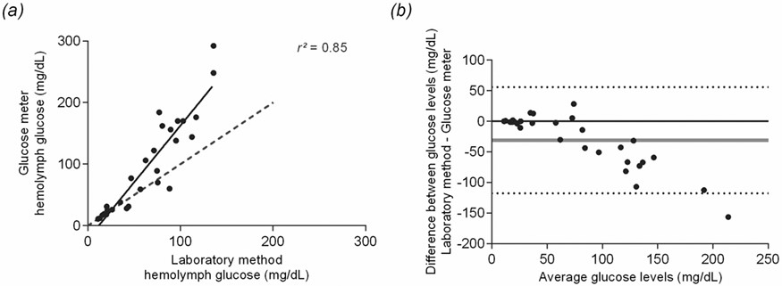

Point-of-care testing for measuring haemolymph glucose in invertebrates is not a valid method
Blood glucose is widely used as a physiological parameter for vertebrates and invertebrates. However, its measurement in the field is often difficult due to the need for expensive and non-portable equipment. Point-of-care (POC) devices, originally intended for human use, are increasingly being used for measuring blood parameters of animals in the field. In this regard, POC glucose meters are becoming valuable tools for conservation physiologists, as glucose can be a useful indicator of stress response. In invertebrates, the use of POC glucose meters is still scarce, and no study yet has evaluated their usability in crustaceans and molluscs. We tested if a POC device can be used to measure haemolymph glucose in two widely used models, Leptuca thayeri and Perna perna, compared with a standard laboratory method. The device was unable to measure glucose in P. perna haemolymph due to equipment inaccuracy and low glucose concentration in this species (10.13 ± 6.25 mg/dL). Additionally, despite the device being capable of measuring glucose in L. thayeri haemolymph, Bland–Altman plots showed a strong bias and wide limits of agreement, and Lin’s concordance correlation coefficient showed a weak concordance between methods. When simulating experimental conditions, POC results differed from those found using the standard method. We conclude that POC glucose meters are unsuitable for assessing glucose in mussels and should not be used in crabs as results are inaccurate.
![]()
Explore more

Citation
@online{c._principe2019,
author = {C. Principe, Silas and Augusto, Alessandra and M. Costa,
Tânia},
title = {Point-of-Care Testing for Measuring Haemolymph Glucose in
Invertebrates Is Not a Valid Method},
date = {2019-01-01},
url = {https://doi.org/10.1093/conphys/coz079},
langid = {en}
}